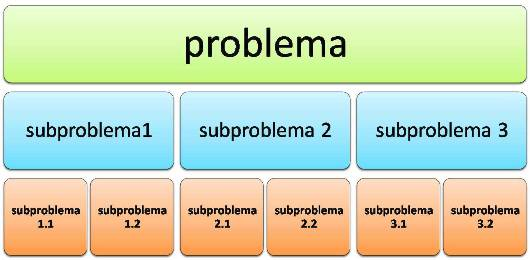

Los computadores realizan realmente determinadas tareas sencillas, tales como sumar, comparar o transferir datos; sin embargo, son más complejos los problemas que nos interesa resolver. Para resolver un problema real, debemos encontrar una estrategia de resolución y, luego precisar la secuencia de pasos sencillos (realizables en un computador) en que se descompone dicha estrategia.
Para simplificar la resolución de problemas complejos, podemos utilizar la estrategia de "divide y vencerás"; que en nuestro entorno de programación significa dividir dicho problema complejo en subproblemas más específicos y solucionables.
No todas las estrategias de resolución de los problemas se pueden implementar en un computador. Para que una estrategia pueda ser implantada en un computador debe tener estas características:
Un algoritmo es un procedimiento o estrategia de resolución de un problema, que cumple las características anteriores. Una definición de algoritmo es:
Un algoritmo es una serie de instrucciones para resolver un problema mediante una secuencia de pasos bien definidos, ordenados y finitos.
El diseño de algoritmos es descendente o "top-down", ya que a partir de un gran problema inicial realizamos varias subdivisiones jerárquicas obteniendo subproblemas cada vez más simples. A la par de estas etapas, se van obteniendo descripciones del problema cada vez más detalladas con más pasos puntuales, y por ende refinando el algoritmo.
Las ventajas más importantes de este tipo de diseño son:
Para llegar a ser un programador eficaz se necesita aprender a resolver problemas de un modo riguroso y sistemático. La metodología de la programación se utiliza para resolver problemas mediante programas. La resolución de un problema exige el diseño de un algoritmo que resuelva el problema planteado.
Los pasos para la resolución de un problema son:
Para poder ejecutar un algoritmo es necesario disponer de las “herramientas” adecuadas para llevar a cabo cada uno de los pasos. En caso contrario, esos pasos a su vez, deben ser descompuestos en una secuencia (algoritmo) de pasos más simples, que sí es posible llevar a cabo.
Un programa de computador es una sucesión de órdenes que describen un algoritmo, escritas en forma que se puedan entender por el computador.
En un algoritmo (y por ende en un programa) se distinguen las siguientes acciones:
Características de los Algoritmos